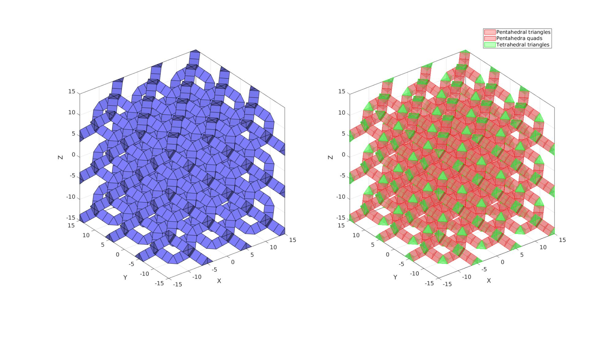
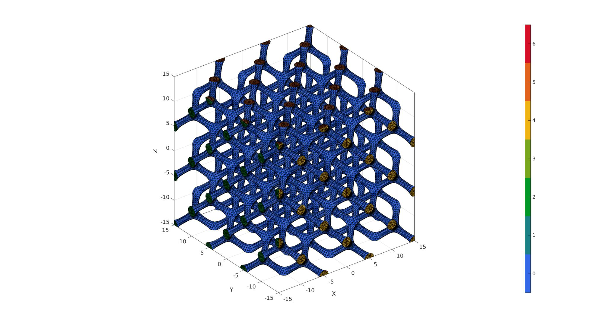

diamondLattice
Below is a demonstration of the features of the diamondLattice function
Contents
clear; close all; clc;
Syntax
[Ep,Et,VT]=diamondLattice(sampleSize,nRepeat,strutThickness,latticePhaseType);
Description
This functions creates element/patch data for the diamond lattice
Plotting settings
fontSize=15; faceAlpha1=0.8; faceAlpha2=1; edgeColor=0.25*ones(1,3); edgeWidth=1.5; markerSize=25; markerSize2=10; cMap=gjet(4);
Examples
%Latticeparameters nRepeat=3; %Number of repetitions of the lattice pattern sampleSize=30; nSubPenta=1; strutThickness=2; %Set the strut thickness latticePhaseType=1; % 1 = "bubble" centred, 2 = vertex centred, 3 = nested
Create diamond lattice
[Ep,Et,VT]=diamondLattice(sampleSize,nRepeat,strutThickness,latticePhaseType); [Ep,VT]=subPenta(Ep,VT,nSubPenta,3); %Sub-divide pentahedra %Get element faces for visualization Fp=element2patch(Ep,[],'penta6'); Ft=element2patch(Et,[],'tet4'); % strutThicknessCheck=mean(patchEdgeLengths(Fp{1},VT))
Visualization
cFigure; subplot(1,2,1); hold on; gpatch(Fp,VT,'bw','k',1); gpatch(Ft,VT,'bw','k',1); axisGeom; camlight headlight; subplot(1,2,2); hold on; hpl=gpatch(Fp,VT,'rw','r',0.5); hpl(end+1)=gpatch(Ft,VT,'gw','g',0.5); legend(hpl,{'Pentahedral triangles','Pentahedra quads','Tetrahedral triangles'}); axisGeom; camlight headlight; drawnow;
Build refined and smooth triangulated surface mesh
Fpt=[Fp{1}; Fp{2}(:,[1 2 3]);Fp{2}(:,[3 4 1])];
FT=[Fpt;Ft];
[FT,VT]=patchCleanUnused(FT,VT);
FTs=sort(FT,2);
[A_uni,ind1,ind2,Ac]=cunique(FTs,'rows');
[FT,VT]=patchCleanUnused(FT(Ac==1,:),VT);
CT=zeros(size(FT,1),1);
for q=1:1:3
X=VT(:,q);
XF=X(FT);
CT(all(XF>=(max(X(:))-eps(max(X(:)))),2))=max(CT(:))+1;
CT(all(XF <(min(X(:))+eps(min(X(:)))),2))=max(CT(:))+1;
end
% %%
% % Visualization
%
% cFigure; hold on;
% gpatch(FT,VT,CT,'k',1);
% axisGeom; camlight headlight;
% colormap gjet; icolorbar;
% drawnow;
Refine using Loop-subdivision
n=2; logicConstrain=(CT>0); %Logic for faces to subdivide linearly indConstrain=find(logicConstrain); indNotConstrain=find(~logicConstrain); [Fs1,Vs1,Cs1]=subTriLoop(FT(logicConstrain,:),VT,n); faceBoundaryMarker_sub1=CT(indConstrain(Cs1)); %Get boundary markers for refined mesh [Fs2,Vs2,Cs2]=subTriLoop(FT(~logicConstrain,:),VT,n); faceBoundaryMarker_sub2=CT(indNotConstrain(Cs2)); %Get boundary markers for refined mesh [Fs,Vs,Cs]=joinElementSets({Fs1,Fs2},{Vs1,Vs2},{faceBoundaryMarker_sub1,faceBoundaryMarker_sub2}); [Fs,Vs]=patchCleanUnused(Fs,Vs); [Fs,Vs]=mergeVertices(Fs,Vs); %Fix boundary faces dir=[1 1 2 2 3 3]; for q=1:1:6 ind=unique(FT(CT==q,:)); ind_s=unique(Fs(Cs==q,:)); Vs(ind_s,dir(q))=mean(VT(ind,dir(q))); end
Visualization
cFigure; hold on; gpatch(Fs,Vs,Cs,'k',1); axisGeom; camlight headlight; colormap gjet; icolorbar; drawnow;

GIBBON www.gibboncode.org
Kevin Mattheus Moerman, gibbon.toolbox@gmail.com
GIBBON footer text
License: https://github.com/gibbonCode/GIBBON/blob/master/LICENSE
GIBBON: The Geometry and Image-based Bioengineering add-On. A toolbox for image segmentation, image-based modeling, meshing, and finite element analysis.
Copyright (C) 2006-2022 Kevin Mattheus Moerman and the GIBBON contributors
This program is free software: you can redistribute it and/or modify it under the terms of the GNU General Public License as published by the Free Software Foundation, either version 3 of the License, or (at your option) any later version.
This program is distributed in the hope that it will be useful, but WITHOUT ANY WARRANTY; without even the implied warranty of MERCHANTABILITY or FITNESS FOR A PARTICULAR PURPOSE. See the GNU General Public License for more details.
You should have received a copy of the GNU General Public License along with this program. If not, see http://www.gnu.org/licenses/.